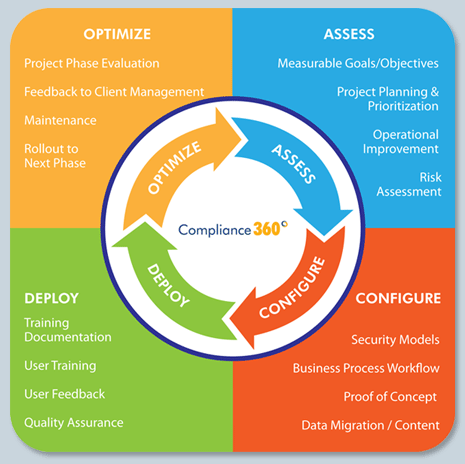
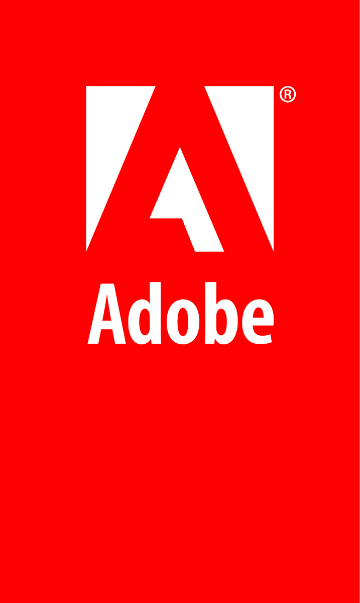
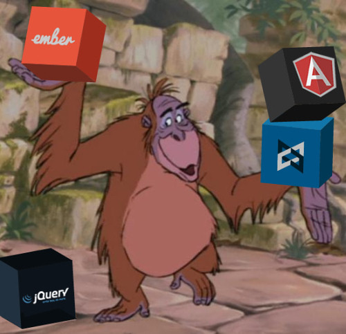
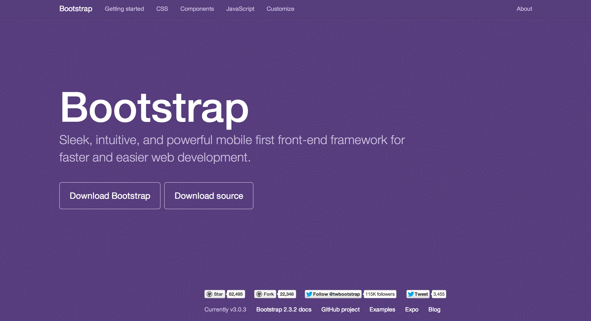
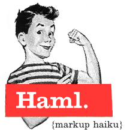
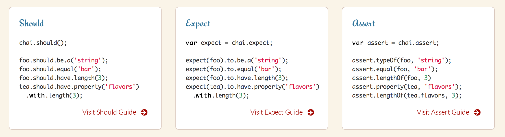
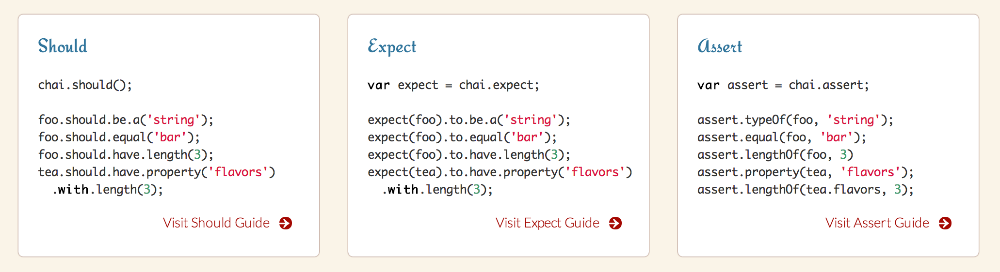

Industrial JavaScript

I'm involved in both Java and JavaScript communities

Java ?
Yes, I "still" do Java
and I "still" enjoy it!
I ended up working in
"big companies"
In these "big companies"...
Java
developer |
JavaScript
developer |
|
|
|
Being a developer in one of these companies...
Thinkpad forever
1 GB Ram, Win XP (no kidding) Thinkpad
Internet Explorer
Choosing a new piece of software...
- They have to spend money
- One solution to rules them all
Industrial Workflows

Selling the Web Platform
to these "big companies"
is not an easy task
The situation has evolved

drops
drops

The magic Keyword has landed
JavaScript ecosystem has evolved
First you have to enter
AngularJS

Whether you like AngularJS or not, it's the key to bring JavaScript development in big companies
The following views are NOT my own!
Supported by Google
Full stack framework

Dependency Injection
- Structure
- Modularity
- Testability
Match with Java EE concepts
Spring & EJB
But once inside, it's only the beginning
They never have invested in design...

Bring Java developer to (real) JavaScript development isn't easy, but...
We've got also Dependency management

 Build
Build
"JavaScript is not compiled,
it doesn't need to be built"
Grunt
Web optimization
No one should anymore copy his source files on a Web server

Web Deployment
in 2014 =
Verifications (JsHint) +
Preprocessors (Sass, Coffee...) +
Minifications (Uglify) +
Image Optim (Imagemin...) +
Concatenations (concat) +
Cache Buster (rev) +
...
Grunt can "watch" your files and recompile everything
Welcome preprocessors!
for CSS...
JavaScript...


Even HTML!

Too much Grunt configuration?
There is also a solution, he's called Yeoman

Grunt will also run your tests!
Unit Testing JavaScript?
YES!
With Jasmine
No, this one

Or with that one from
the Node.js community
 

In every browsers!

And produce reports
- In the console
- In HTML files
- In JUnit compatible format
- With coverage!
You can fit your JavaScript project in Jenkins & Sonar
 +
=>
&
+
=>
&
JavaScript projects can finally fit in Industrial workflows
Thank you!
 @Swiip
@Swiip